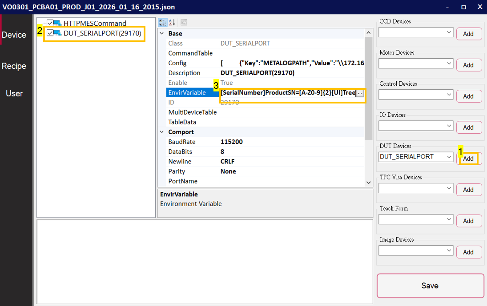
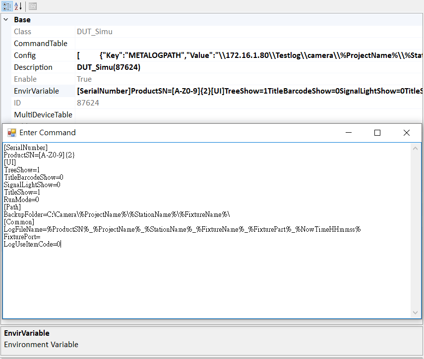

Environment Variable Settings¶
1. Add a DUT object and open the editor¶
In the DUT object's property list, locate the EnvirVariable field and click the "…" button on the right. This will directly open the Variable Editor window (multi-line editing UI).

After opening, you will see content similar to an INI file: multiple sections split by [Section], and each line defines a Key=Value entry.

2. Format rules (INI style)¶
- Sections: written as
[SectionName], e.g.,[UI],[Path]. - Key-value pairs: one setting per line, in the form
Key=Value. - Variable substitution: you can use
%VarName%inside strings (e.g.,%ProjectName%), which will be substituted at runtime. - Path recommendation: for Windows paths, avoid illegal characters
\ / : * ? " < > |(especially in file-name templates).
3. Common sections and key descriptions¶
| Key | Purpose (details) |
|---|---|
ProductSN |
Defines SN/barcode format rules. Under [SerialNumber], you can define multiple SN formats, and the system generates the SN input TextBox on the main UI based on the configuration. When scanning or manually entering an SN, the system first validates it against the configured Regex; invalid formats can block flow entry or prompt an error. Example: ^[A-Z0-9]{12}$ (12 upper-case alphanumeric) |
TreeShow |
Controls whether the left TreeView (workflow tree) is displayed on the main UI. If operators only need to press Start and do not need workflow details, you can hide it to simplify the UI and reduce mis-operations. |
TitleBarcodeShow |
Controls whether the title bar shows the Barcode/SN information area. If the shop floor already displays SN elsewhere or you want to reduce title bar content, disable it to increase usable screen space. Common values: 0/1 |
SignalLightShow |
Controls whether to display the tri-color signal light (or status light) UI. Often used for quick station state recognition (RUN / PASS / FAIL / ALARM). If no signal light is used on-site, disable it. Common values: 0/1 |
TitleShow |
Controls whether the entire title bar area is displayed (including version, recipe name, etc.). Disable it if the screen is small or you want a cleaner UI. Common values: 0/1 |
RunMode |
Sets the system run mode (project-defined), affecting how flows start, button availability, and runtime behavior. Example: 0 = triggered by the SN TextBox; 1 = triggered by the Start button and supports loop testing; 2 = rotary mode (illustrative). |
BackupFolder |
Sets the backup path (supports substitution variables). After the test completes, logs/CSV/images will be backed up to this folder. In multi-station/multi-fixture environments, include Project/Station/Fixture to avoid file mixing. Usually both local and server paths are configured. Example: C:\Camera\%ProjectName%\%StationName%\%FixtureName% |
LogFileName |
Naming template for logs/CSV/images, etc. Typically includes SN, project, station, fixture, and timestamps to ensure uniqueness and traceability. Example: %ProductSN%_%ProjectName%_%StationName%_%FixtureName%_%FixturePart%_%NowTimeHHmmss% |
4. Example template¶
[SerialNumber]
ProductSN=[A-Z0-9]{12}
MAC=[A-Z0-9]{2}:[A-Z0-9]{2}:[A-Z0-9]{2}:[A-Z0-9]{2}:[A-Z0-9]{2}:[A-Z0-9]{2}
[UI]
TreeShow=1
TitleBarcodeShow=0
SignalLightShow=0
TitleShow=1
RunMode=0
[Path]
BackupFolder=C:\Camera\%ProjectName%\%StationName%\%FixtureName%
BackupFolder2=Z:\Camera\%ProjectName%\%StationName%\%FixtureName%
[Common]
LogFileName=%ProductSN%_%ProjectName%_%StationName%_%FixtureName%_%FixturePart%_%NowTimeHHmmss%
FixturePort=J01
LogUseItemCode=0